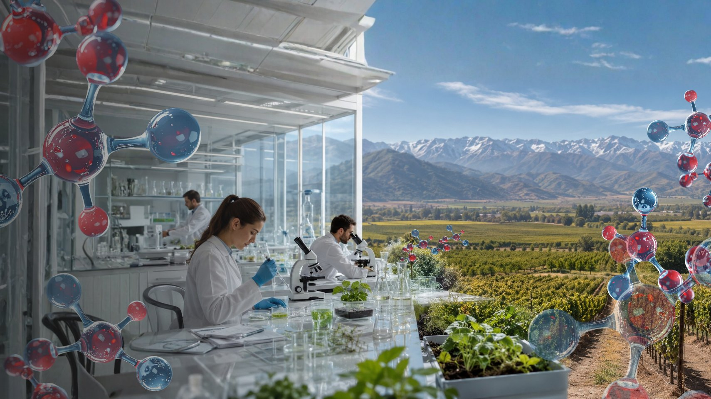
Casos de éxito que demuestran cómo la bionanotecnología de Pewman fortalece los cultivos frente al estrés climático, mejora la eficiencia hídrica y protege el rendimiento de campos nacionales e internacionales.
Agricultores de Chile cuentan sus resultados con Crioprotect y Nanoforte. Haz clic para ver el video.

Compartió su experiencia usando Nanoforte en su campo de duraznos nectarín.

Aumento de producción en kiwis tras la aplicación de Crioprotect.

Aplicación de Crioprotect antiheladas en paltos de la V Región.

6 heladas consecutivas de −2 a −3°C sin sufrir daños significativos.

Ensayo aplicando Crioprotect en un cuartel de Chardonnay expuesto a heladas.

En solo 7 días vio los resultados de Nanoforte en sus lechugas y coliflores.
Resultados validados en distintos cultivos y regiones.
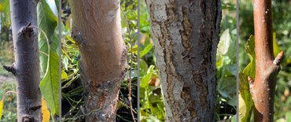
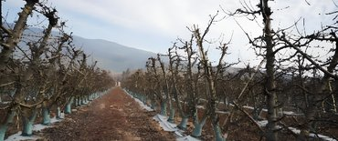
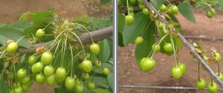
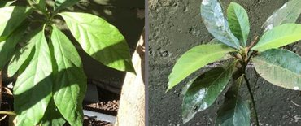
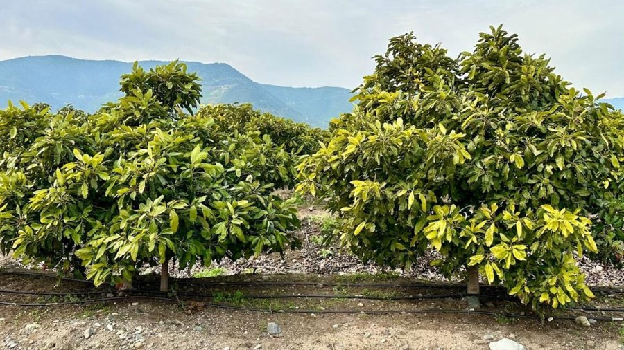
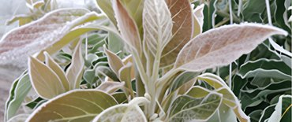
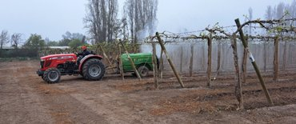
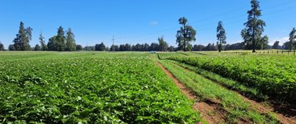
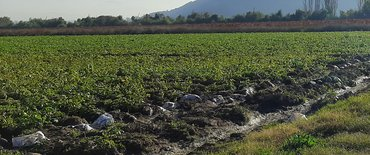
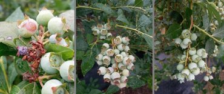
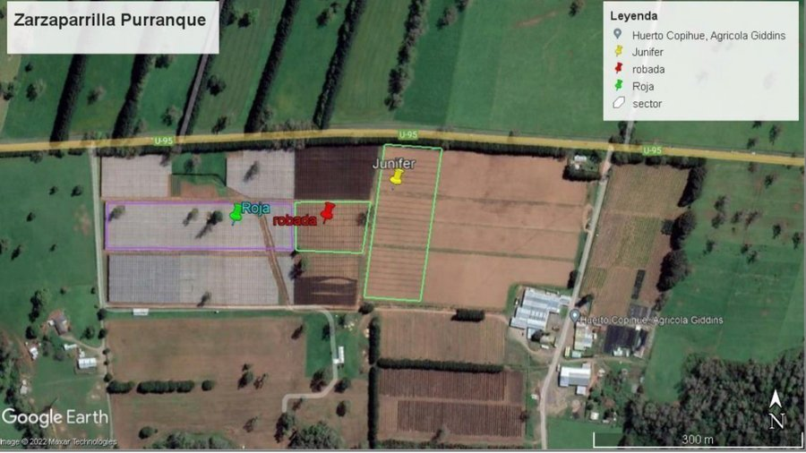
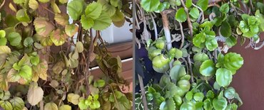
Conversa con nuestro equipo y arma la estrategia ideal para proteger y potenciar tu cultivo esta temporada.